Habits...
...a pattern of repeated behaviour
What causes a habit???
Experts aren't always sure what causes a habit, but do know that they're learned behaviors that usually provide a positive outcome for the child. Habits may develop as entertainment for a bored child or, more commonly, as a coping mechanism to soothe an anxious one. The next time you see nail biting or hair twirling, try to recall if your child has recently had a stressful experience. If so, the behavior might be your child's attempt to relieve tension, much as you would by working out at the gym. On the other hand, some kids engage in habits when they're relaxed, such as before falling to sleep or quietly listening to music. Some habits may be leftovers from infancy. In infants, thumb sucking is a common self-comfort behavior that has pleasurable associations with feedings and the end of hunger. So it may linger into childhood because of its positive associations. Or perhaps the explanation for your child's nail biting is in your mirror. Do you bite your nails? Studies suggest that nail biting may have a strong familial or genetic component. Other kids engage in habits to attract attention or to manipulate their parents. If kids feel that their parents are ignoring them, they may engage in the annoying habit because they know that it will get a reaction from Mom or Dad.
The basics, always with you throughout your life.
When Is a Habit No Longer Just a Habit?
In some cases, a habit is the result or the cause of a physical or psychological problem. For example, a nose-picker might be uncomfortable because there's actually an object stuck in the nose. And the habits themselves can cause some medical complications, such as:
- nosebleeds in the nose picker
- ingrown or infected nails in the nail biter
- dental problems, such as malocclusion (the failure of the teeth in the upper and lower jaws to meet properly), or thumb or finger infections in the thumb sucker
A habit may no longer be a simple habit if it negatively affects a child's social relationships or interferes with daily functioning.
Older kids who constantly suck their thumb might be experiencing significant stress or anxiety. If kids are the subject of teasing at school or have difficulty talking because they won't take their thumbs out of their mouths, the behavior has gone beyond a simple habit. Kids who pull their hair out may have trichotillomania, a condition that results in hair loss. And habits that are in response to obsessive thoughts may be a sign of OCD.
However, most habits don't cause any significant problems and tend to improve as kids get older. But if you're concerned about your child's habits, talk with your doctor.
It's never too late, but best if you start early!
GOOD HABITS
Eat Healthy Foods:
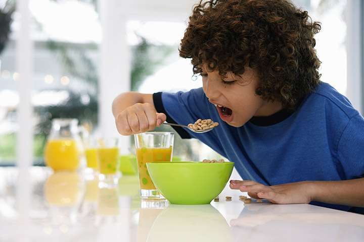
This one's probably the toughest of them all. Just like most other children, your child too will be tempted to grab a bag of chips or a packet of biscuits.
- Explain the importance of healthy eating and how junk foods could be harmful for health.
- Make homemade versions of fast food snacks like noodles, pasta and pizza for your child occasionally.
Table Manners:
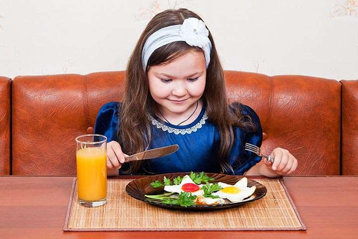
This is definitely one of the most important points among the list of good habits you need to educate your child about. It’s now time to start treating your child like an adult as he sits at the table for dinner.
Brushing Twice a Day:
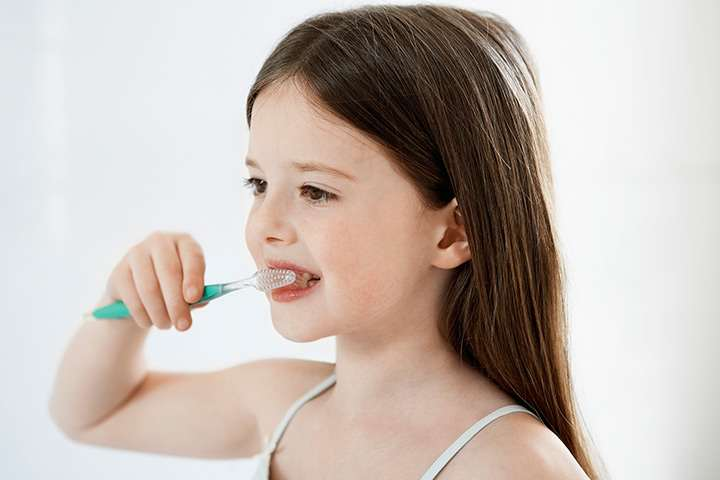
Younger children are often lazy when it comes to brushing their teeth.
- Make sure you take a few minutes to educate him about the importance of proper brushing.
- Try and make brushing a fun-filled activity by occasionally allowing him some sweet treats if he promises to brush right after he has them.
Sleep On Time:
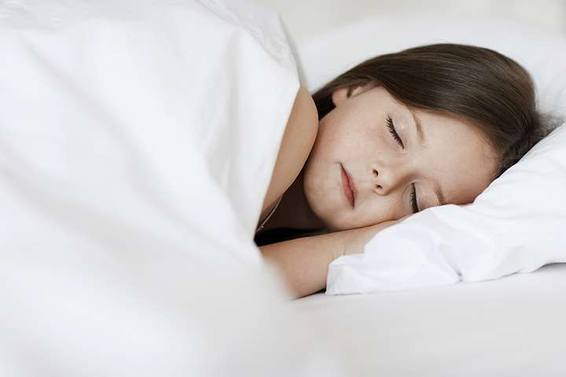
Get your child to establish a correct sleep schedule.
- It will be the most important when your child starts going to school.
- Stick to a regular bedtime yourself. Your child is less likely to be awake if you aren't.
Play Outdoors:
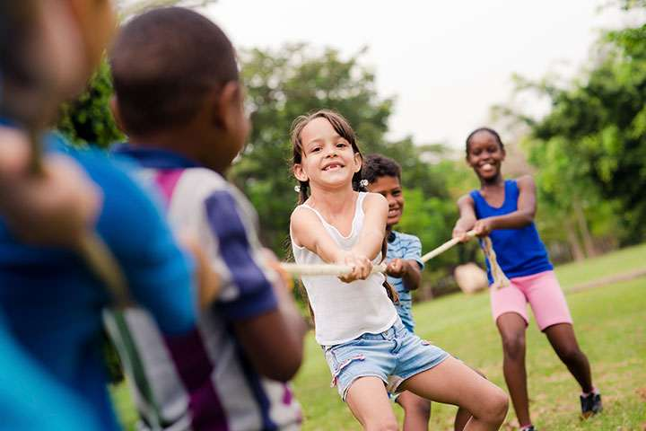
It's easy to get glued to the TV screen watching cartoons or playing screen games, but that's not what you would want your child to be doing.
- Get out with him for some fresh outdoor activities every day.
- Encourage physical activity.
Cleaning Up The Mess:
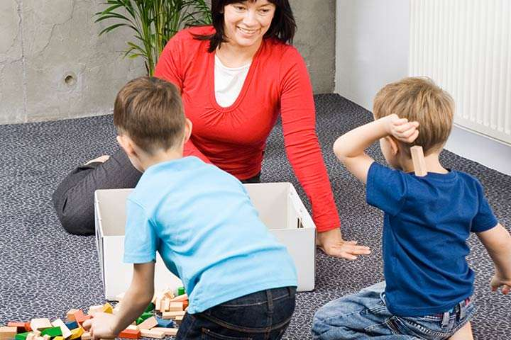
It’s always a good idea to get your child clean up the mess in his room.
- Allot him a span of 10-15 minutes a day to make sure all his toys, books and stuff are placed at their appropriate places.
- You can always reward him with his favourite home-cooked snack afterward!
Be Responsible With Money:
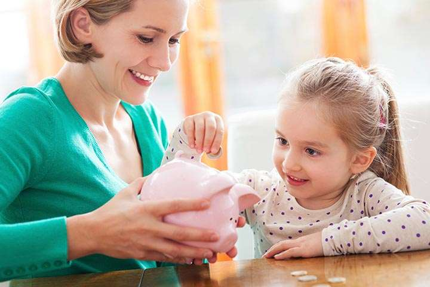
If your child is old enough that you start to offer him pocket money, educate him about being responsible with money.
- Get him a piggy bank.
- Encourage him to save his money and manage his expenses within a given budget (you do it all the time- and it's time to let your child know that too).
Say 'Please' and 'Thank You':
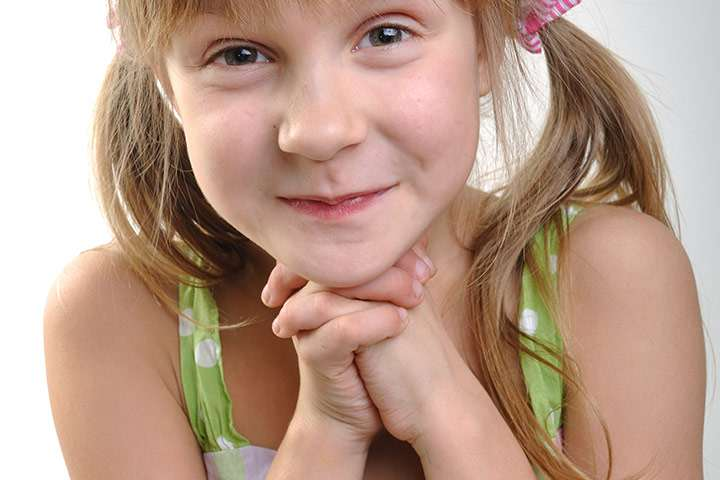
Another basic rule you need to educate your child about. 'Please' and 'Thank You' are magical words that can handle most jobs without any hassles, and that's what you would want your child to know.
Sharing Is Caring:
It is one of the very important good habits.
- If your child is an only child, you will need to explain how sharing transforms as an important part of life.
- Educate him about how sharing doubles up the joy and how he is lucky enough to have a particular toy or object while others are not.
- Siblings usually have no problem with this one (in most cases). If there are issues then you know how best to teach your children the art of sharing.
Don't Litter Public Spaces:
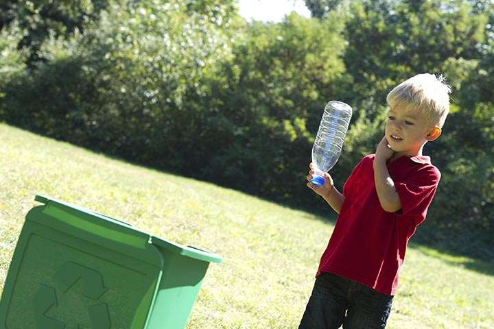
Explain to your child about how littering public places like a park or a garden is a symbol of a bad citizen. Ask him to always throw away trash in a dustbin and play his part in being a civilized citizen.
Help your child, following these simple habits, will surely go a long way in developing his habits and shaping his personality. Explain him how following these simple good habits at school will make him a better person.
"All bad habits start slowly and gradually and before you know you have the habit,the habit has you."
BAD HABITS
Nail Biting
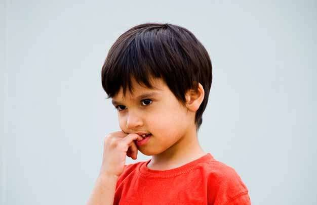
If nails chewed to the nub are familiar to you, you're not alone. Nail biting or picking is one of the most common childhood habits. An estimated 30% to 60% of kids and teens chew on one or more fingernails. And, occasionally, a child may also bite his or her toenails. Boys and girls appear equally prone to the habit in earlier years; however, as they get older, boys are more likely to be nail biters.
Hair Twirling
If one of your kids is a hair twirler, odds are it's your daughter. Most kids who twist, stroke, or pull their hair are girls. Hair twirling may appear in early childhood as a precursor to hair pulling, either with or without hair loss. But many hair twirlers and pullers stop as they get older. For those who don't, simple behavior modification can help them break the habit. However, for those who start hair pulling as older kids or teens, the habit is harder to break and may be a sign of anxiety, depression, or obsessive-compulsive disorder (OCD).
Nose Picking
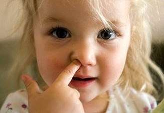
Nose picking appears to be a habit that, although it usually begins in childhood, may actually linger into adulthood. If you find that hard to believe, consider that a 1995 study of adults found that 91% picked their noses regularly — and about 8% of them reported that they eat what they pick!
Thumb Sucking
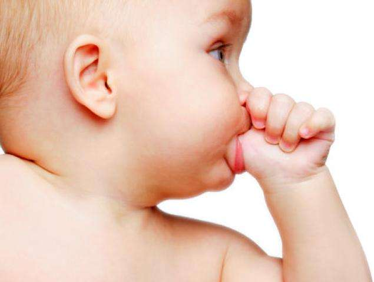
Kids' preference for thumbs as the finger to suck is thought to be the result of the thumb coming into contact with the mouth during movements they made an infants. Some kids also suck their fingers, hands, or their entire fists in addition to, or instead of, their thumbs. Most thumb suckers are younger kids and up to half of 2- to 4-year-olds suck their thumbs. Many kids suck their thumbs to calm and comfort themselves. But frequent or intense thumb sucking beyond 4 to 5 years of age can cause problems, including dental issues (such as an overbite), thumb or finger infections, and being teased.
"Always follow the good ones"
Coping With Your Child's Habit
The good news is that most habits disappear, usually by the time a child reaches school age, because the child no longer needs it or outgrows it.
But if you think it's time to help your child break a habit, consider these steps:
- Calmly point out what you don't like about the behavior and why. This approach can be used with kids as young as 3 or 4 to help increase awareness of the problem. Say something like, "I don't like it when you bite your nails. It doesn't look nice. Could you try to stop doing that?" Most important, the next time you see the nail biting, don't scold or lecture. Punishment, ridicule, or criticism could cause the behavior to increase.
- Involve your child in the process of breaking the habit. If your 5-year-old comes home crying from kindergarten because the other kids made fun of his thumb sucking, understand that this is a way of asking you for help. Parents can ask their kids what they think they could do to stop the habit or if they want to stop the habit. Come up with some ways to work on breaking the unwanted habit together.
- Suggest alternative behaviors. For example, when if your child is a nail-biter, instead of saying, "Don't bite your nails," try saying, "Let's wiggle our fingers." This will increase awareness of the habit and may serve as a reminder. To occupy your child's attention, try providing a distraction, like helping you in the kitchen or working on a craft.
- Reward and praise self-control. For example, allow your little girl to use nail polish if she lets her nails grow. Or every time your son refrains from sucking his thumb, reinforce the positive behavior by praising him and giving him a sticker or other small prize.
- Be consistent in rewarding good behavior. If you fail to notice good behavior, it will disappear over time. The new, positive habit must be firmly established before the old one will disappear.
For the best success, it's important that kids be motivated to break the habit. And because habits take time to develop, they're also going to take time to be replaced by alternative behavior, so be patient.